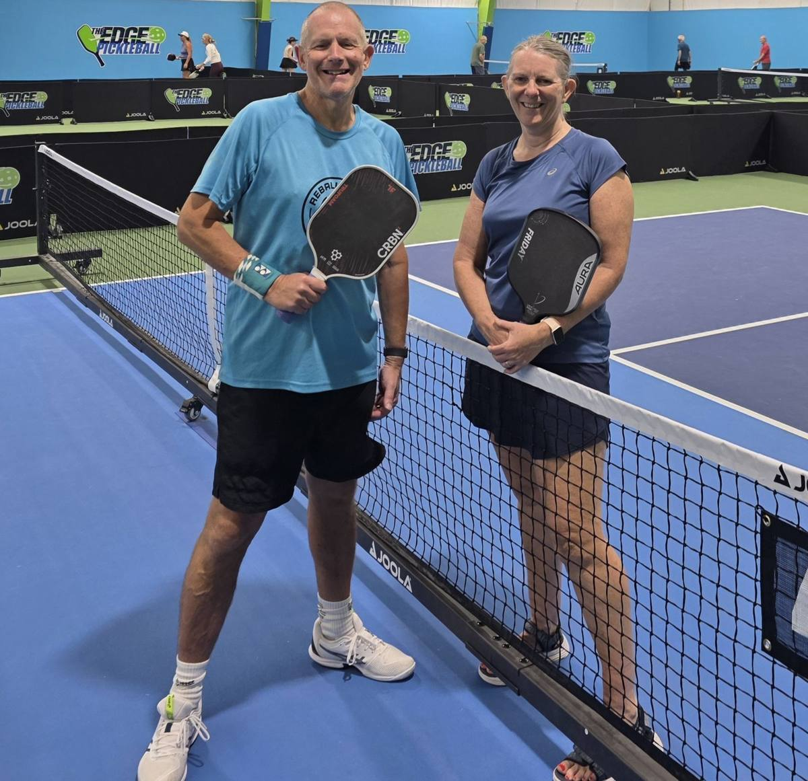
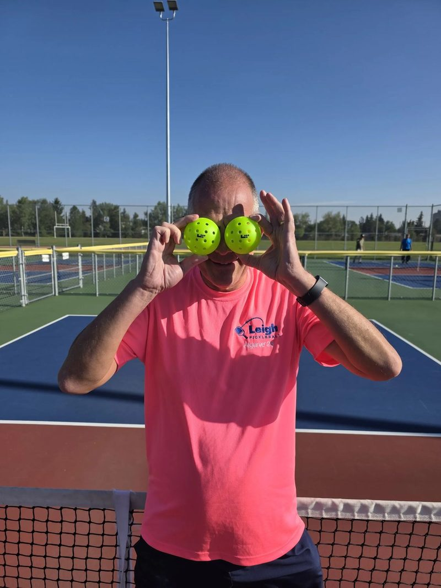

We chase the best pickleball courts, wherever they are.
Two paddles, one carry-on, and a habit of finding the best pickleball in every city we land in. We play, we film every match, and we run it through AI to see what the footage won't tell you at first glance.

Every stop gets the same treatment: find the local players, get on court, roll camera, and break the tape down afterward.
Featured City Guides
Real courts, real details, from the stops we know best. More get added as we go.
How we play
The brand rests on three habits we don't skip, wherever we are in the world.

Travel
We build our route around pickleball, not the other way round — chasing the game to wherever the courts and the community are strongest.

Film
Every match gets recorded, end to end. Not highlight clips — full games, so there's something real to study when we're done playing.

Analyse
The footage goes through AI analysis after every session — shot patterns, positioning, what actually won or lost the point.
Courts we've chased
A running line of where the paddles have been. It only ever gets longer.
Scroll to see the full run — from Toronto to Kuala Lumpur, with a stack of stops across Southeast Asia, Turkey, Iberia, India and North America in between. Underlined stops have a short guide — tap the name.
The footage does the arguing
Two parts to every stop: what we shoot, and what the AI finds in it afterward.
On camera, every point
A fixed sideline camera runs for the full match — no editing mid-game, no cherry-picked rallies. It's the same setup whether we're on a rooftop court in Bangkok or a converted tennis court in Portugal.
EDMONTONMONTREALEdmonton session with local coach Ava Weeks — one of many local players and coaches along the route.
Then the AI takes a pass
Every recorded match gets run through AI analysis — shot selection, court coverage, where points are actually being won and lost. It's how the travel doubles as training.
69 games, every shot analysed
4,478 shots from 12 venues in six countries, run through PBVision's AI. The headline: once we started drilling the fourth shot, it became our most improved shot.
Partner with us
Clubs, brands, and gear makers along the route — here's what working together looks like.
What you get
A featured stop on the route: real match footage, an AI-analysed breakdown, and a shoutout to your court, club, or gear — shared with a following that spans continents, not just one city's scene. No staged content, we actually play there.
How it works
Reach out before we're in your city, or before your product ships out. We work out what a feature looks like around the stops already on the route — a match, a clinic, a gear review, whatever fits.